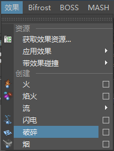
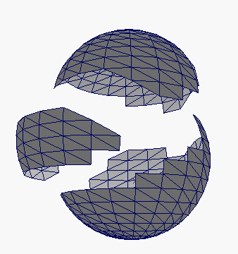
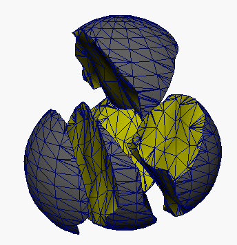
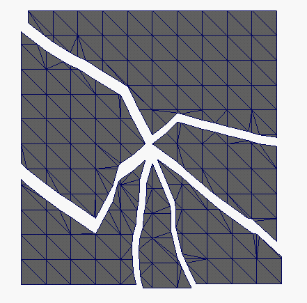

破碎效果可以复制对象，并将副本拆分为多个部分，称为碎片。根据您选择创建的碎片类型，可以通过动力移动碎片或者为它们的移动设定关键帧。
若要访问“破碎”(Shatter)效果，请在“FX”菜单集中选择 。
。

破碎提供以下三种打破对象的方法：
- 曲面破碎(Surface Shatter)
- 实体破碎(Solid Shatter)
- 裂缝破碎(Crack Shatter)
重要说明
- 若要破碎多边形对象，必须先删除对象的历史（“编辑 > 按类型删除 > 历史”(Edit > Delete by Type > History)），然后再创建“破碎”(Shatter)效果（“效果 破碎”(Effects > Shatter)）。
- 如果移动碎片或碎片的父对象，系统会为动力学模拟将碎片的值保存为初始状态。如果此操作在非开始帧位置执行，碎片会将动力学模拟的结果保存为初始状态。将模拟回放到对象位置调整之前的开始处。
曲面破碎(Surface Shatter)
“曲面破碎”(Surface shatter)沿多边形边界断开选定对象。使用“曲面破碎”(surface shatter)可以将一个对象断开为单独的多边形。

创建“曲面破碎”(surface shatter)
- 选择要破碎的对象。
可选择 NURBS 或多边形对象。对象可以是开放曲面，也可以是闭合曲面。
注：破碎对象之前，NURBS 曲面就已细分。结果是一个多边形对象。
- 选择 > 。
- 在“创建破碎效果选项”(Create Shatter Effect Options)窗口中，单击“曲面破碎”(Surface Shatter)选项卡。
- 按设定破碎选项中所述，设定选项。
- 单击“创建”(Create)按钮。
实体破碎(Solid Shatter)
实体破碎将断开对象的曲面，但会保留内部多边形，并创建实体碎片。该操作不会沿多边形边界断开对象，因此破碎的碎片边更加逼真。

创建“实体破碎”(solid shatter)
- 选择要破碎的对象。
可选择 NURBS 或多边形对象。对象必须是闭合曲面。
- 选择 > 。
- 在“创建破碎效果选项”(Create Shatter Effect Options)窗口中，单击“实体破碎”(Solid Shatter)选项卡。
- 按设定破碎选项中所述，设定选项。
- 单击“创建”(Create)按钮。
裂缝破碎(Crack Shatter)
裂缝破碎创建从选定点延伸而出的裂缝。可以在开放的多边形对象上使用裂缝破碎。

创建“裂缝破碎”(crack shatter)
- 选择要破碎的对象。
必须选择多边形对象，且该对象必须是开放的曲面。
- 将指针移动到对象上，然后单击鼠标右键并从弹出菜单中选择顶点。
- 拖动以选择顶点。
裂缝从选定顶点延伸而出。
- 选择 > 。
- 在“创建破碎效果选项”(Create Shatter Effect Options)窗口中，单击“裂缝破碎”(Crack Shatter)选项卡。
- 按设定破碎选项中所述，设定选项。
- 单击“创建”(Create)按钮。